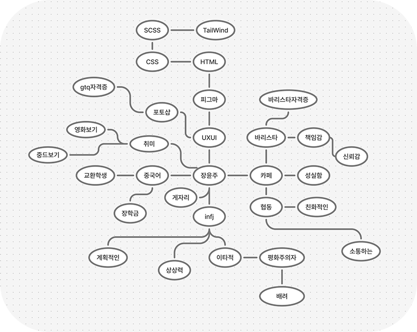

01 brainstorming
먼저 나에 대해서 생각하고 분석해보았습니다.

02 Affinity Diagram
브레인스토밍에서 나온 단어를 뽑아 키워드를 도출하였습니다.
03 Information Architecture
포트폴리오의 정보구조도를 작성하였습니다.
home, abuot, project, skill, portfolio, contact 6개의 큰 인덱스로 구성하였으며,
해당 인덱스의 콘텐츠 요소들과 project, portfolio 에서 이동하는 상세 페이지도 구상하였습니다.
YUNJU's Portfolio
home
- visual section
- about section
- skill section
- project section
- footer section
about
- 자기소개,지원동기
- profile
- history
skill
- skill 종류
work
- 메디힐 리뉴얼
- 게임 ott novi
- 로라로라 리뉴얼
- 앰배서더 호텔 리뉴얼
portfolio
- brainstorming
- Affinity Diagram
- Information Architecture
- flowchart
- design system
04 flowchart
플로우차트를 설정하였습니다.
HOME
header
visual
about
→
section more btn
→
about sub page
skill
project
→
section more btn
→
project sub page
process
→
section more btn
→
process sub page
footer
HOME
05 design system
디자인 시스템을 설정하였습니다.
#00e6ff
#E8E6E0
#040C15
Aa
Aa
Pretendard